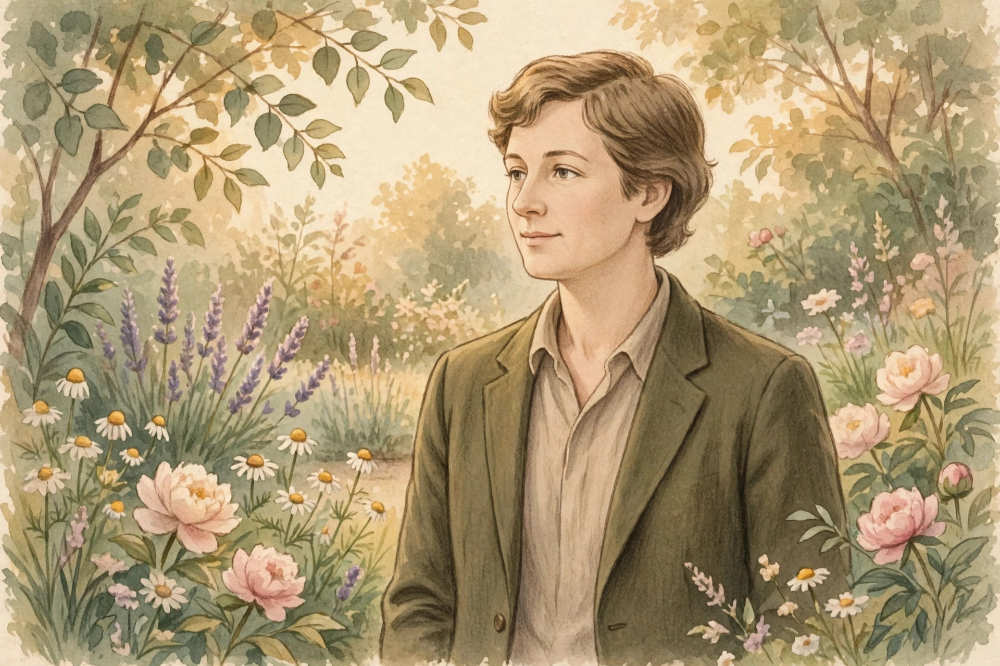

Trending PromptsNew
Trending PromptsNewFriends Portrait Prompts: 10 Fun Ideas for 2026
Some of the best photos are the ones with your friends laughing, and these prompts help you catch that feeling.
Muhammad Afaq · 2026-11-19Read
These are the portrait styles people keep asking for right now. From mirror selfies and travel shots to film style black and white and retro looks, each guide gives you 10 prompts to try. Start with the style you like and see what your photo turns into.
Trending PromptsNewSome of the best photos are the ones with your friends laughing, and these prompts help you catch that feeling.
 Trending PromptsNew
Trending PromptsNewYour pet will not sit still for a camera, so these prompts work with a photo you already took and love.
 Trending PromptsHOT
Trending PromptsHOTThat trip photo on your phone can become a proper keepsake with the right prompt and a little light.

Trending PromptsHOTIf you like a classic, quiet kind of portrait, these prompts give your photo that calm, timeless feel.
 Trending PromptsHOT
Trending PromptsHOTDig out a favourite photo and give it a retro 1980s feel, with the colours and mood of that decade.
Black and white suits a portrait when the light and the face do the talking, and these prompts keep it simple.
 Trending PromptsHOT
Trending PromptsHOTA mirror selfie can look clean and natural when the light is right, and these prompts show you the way.